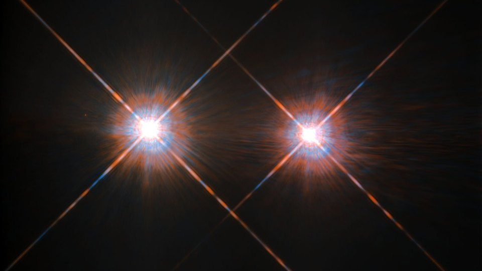
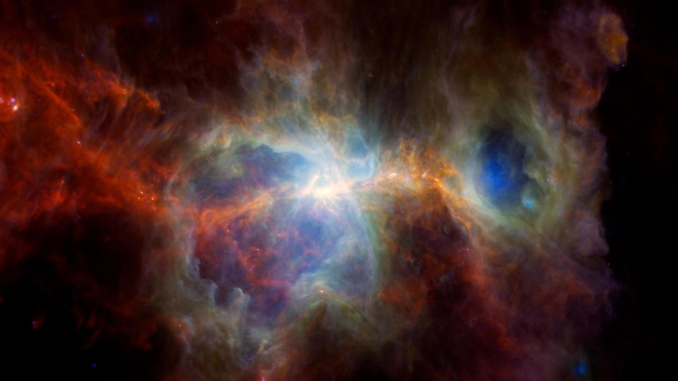
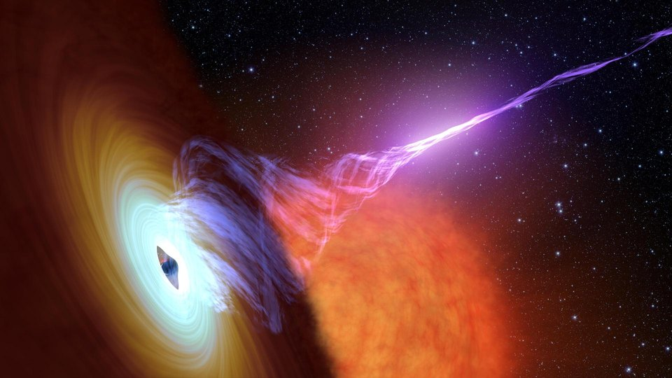
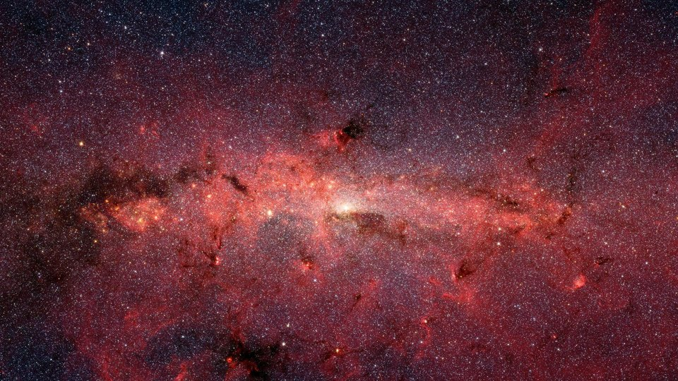

Thumbnails: Alpha Centauri A and B (ESA/NASA/Hubble) · Orion Nebula (ESA/NASA/JPL-Caltech) · black hole with jet, artist's concept (NASA/JPL-Caltech) · center of the Milky Way (NASA/JPL-Caltech).